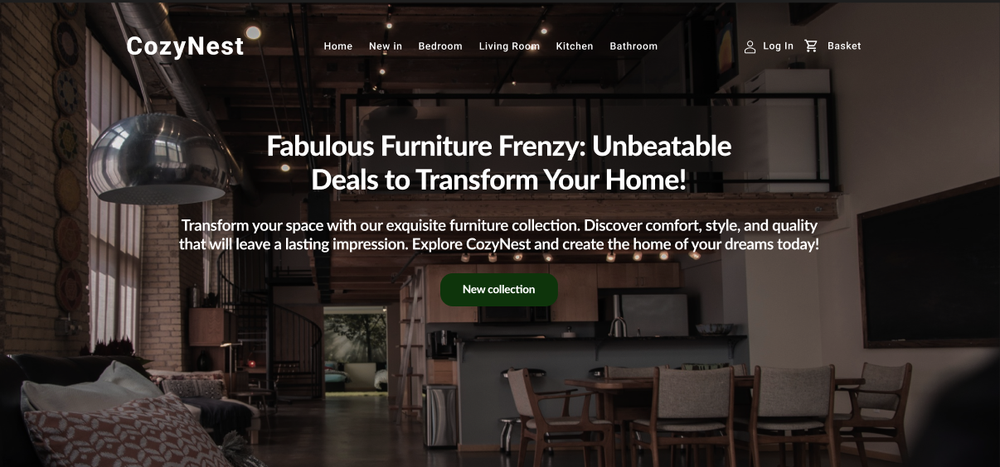
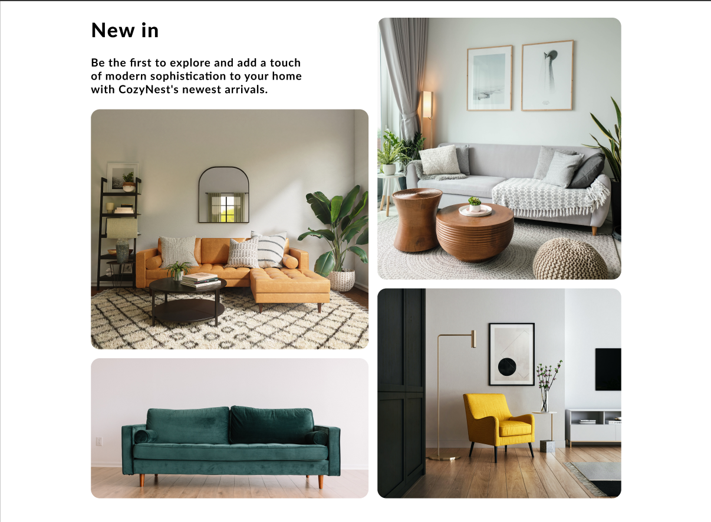
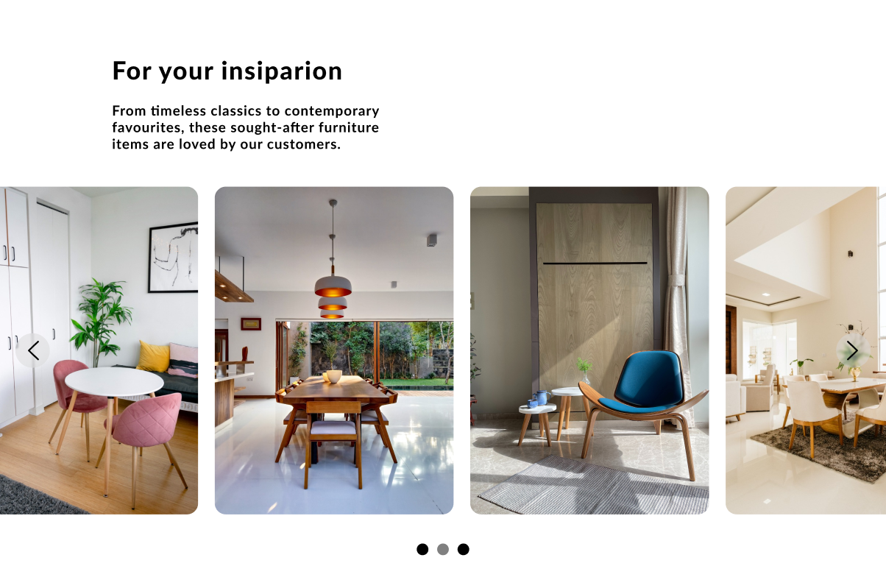
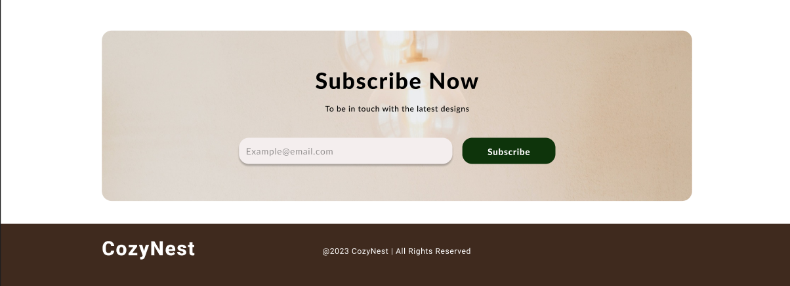

I'm Elena
Web Designer and Front-End Developer.
Short Presentation
Hello, I'm Elena, a graduate with a strong passion for technology, continuous learning, personal development, and a powerful desire to leave a mark of my vision and ideas on the Web Development designs. I hold a First Class BSc Computing Technologies degree from Roehampton University after 4 years of studying multiple domains within the IT industry, learning about SQL, Networking, UX Design, and, my favorite, Web Development, just to name a few.
While I may be a fresh graduate, I am driven by an insatiable curiosity and a commitment to continuous learning. I am excited to apply the skills and knowledge I've acquired on this journey to contribute meaningfully to the dynamic and ever-evolving field of web development.
My Skills
Web Design
HTML/CSS
Bootstrap
JavaScript
"I'm determined to keep moving forward; this is just the start of my journey!"
Education so far:


My journey in learning
My First Ever project - Clothes 4 all
I proudly present my very first website creation—a significant milestone in my journey. The project's objective was to craft a static website featuring diverse image galleries designed to showcase a fictional company. While it may not represent the pinnacle of complexity, and most of the elements are not responsive, I've deliberately left it untouched to serve as a visual testament to my growth and evolution over time.
This project holds a special place in my heart, marking the beginning of my web development voyage. It embodies the essence of my commitment to continuous improvement.

Web Agency Project
This website scales responsively, when is displayed on a smaller screen such a phone. The blocks are changing and are making a better use for the screen by staking on each other.
This was a practice project for a better understanding of display properties, floats, and resposiveness.
Mondrian Project
The purpose of this project was to practice and to gain a deeper appreciation for CSS Grid.I undertook the challenge of recreating Piet Mondrian's Composition no. II, with Red, Blue, Yellow and Black originally painted by Piet Mondrian.
I delved into the intricate world of CSS Grid while paying homage to the masterful work of an artistic legend.

Move it Project
I consider that this project represents a progress of my way of working, comparing my first website "Clothes 4 all". First of all, all the elements of this website are responsive, the image carousel is much more practical and looks much better, the footer is in place and looks much more professional overall.
For the first time I used Bootstrap Snippets, and my work was much easier.

DogMatch Project
This project is a landing page for an app called DogMatch. Basically Tinder for dogs. The aim is helping dogs to meet new and interesting dogs nearby. This is a simple looking website with a animated gradient background with buttons to download the app, as well as features, testimonials, pricing plans and a footer.
It was so fun to create this! I'm definetly looking foward of doing more projects and post them here, so stay updated!
My journey in Web Design
How it started...
My university experience provided me with a solid foundation of standard knowledge, the ABC's of the field. In the images below, I present a website design concept for a fictional sports equipment company. While the design elements are thoughtfully chosen, my education didn't equip me with the skills to bring my ideas to life using Figma. Consequently, the result is a design that may appear somewhat lackluster and less visually engaging.
However, this experience was a turning point. It inspired me to pursue a path of continuous growth and innovation. I made a conscious decision to further develop my skills, striving to create designs that are not just functional but also visually captivating and contemporary.
Stay with me on this journey of learning and transformation as I harness the power of knowledge to craft designs that inspire and captivate.
{kind=link}
{kind=link}
{kind=link}
{kind=link}
Progress and Growth
Aware of the importance of continuous development, I made the decision to participate in various courses and seminars. I was part of an exciting seminar hosted by Webcase where I learned about UI/UX principles and explored using Figma for design. This experience helped me understand how to create custom designs for each type of website, ensuring a great user experience and achieving impactful results.
I believe that having a solid base of UX/UI principles helps enormously in creating websites. It also makes the work much easier, and illustrates how the final product will look.
P.S: First picture represents how this website was originally planned to look like. Haha! Maybe I'll change my mind later!😆

   
Thank you for visiting my portfolio!
Every great professional had their humble beginnings, and I am no exception. What sets me apart is my unwavering commitment to excellence and my willingness to go the extra mile. I see every challenge as an opportunity to learn, and I thrive in environments that encourage creativity and innovation.
By hiring me, you're not just bringing in a novice; you're welcoming a dedicated and passionate individual who is eager to prove their worth. I may not have years of experience, but I make up for it with my fresh perspective, eagerness to adapt, and hunger for success.
I believe that every great success story starts with taking a chance on someone. So why not take a chance on me? Let's embark on this journey together, where we can learn, grow, and achieve remarkable results. I am ready to give my all and help you reach your goals.
Contact Me
Bucharest, Romania
Phone: +40771052891
Email: elenaellav22@mail.com
Let's get in touch. Send me a message: